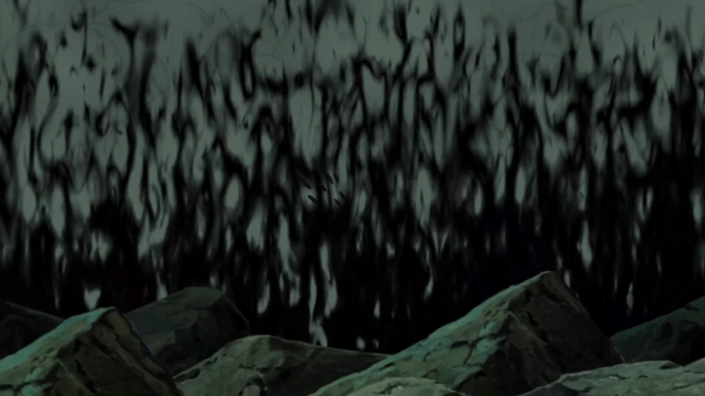

Учиха Матрас
Плюсы и минусы:
+Может уложить сам тебя спать при помощи вечного цукееми;
+Вежлив;
+Бессмертен;
-Он был бессмертным, но потом умер;
-Слишком много хвостов;
-Превратился в странную бабу;
-Любит воровать части Хаширамы;

Техника призыва: Матрас
Плюсы и минусы:
+Легко призвать;
+Тепло:
-Могут призвать только мастер создания оригами из своего клана и САСКЕЕ;
-Можно сгореть до тла;
Конохомару
Плюсы и минусы:
+Может укутаться и с ним не скушно;
-Он костлявый иможет использовать на вас расенган;